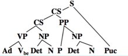
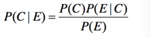

问题的提出:
- 网络信息检索市场前景广阔
- 随着社会全球化时代的到来，机器翻译市场潜力巨大
- 如何让计算机能够自动或半自动地理解自然 语言文本,懂得人的意图和心声?
- 如何让计算机实现海量语言文本的自动处 理、挖掘和有效利用,满足不同用户的各种 需求,实现个性化信息服务?
基本概念:NLU、CL、NLP：
- NLU：(Natural Language Understanding, NLU) 是探索人类自身语言能力和语言思维活动的本质，研究人类语言认知过程的自然语言处理方法和实现技术的一门学科。是计算机科学领域与人工智能领域中的一个重要方向。它研究能实现人与计算机之间用自然语言进行有效通信的各种理论和方法。
- CL：(Computational Linguistics) 计算语言学：通过建立形式化的计算模型来分析、理解和生成 自然语言的学科,是人工智能和语言学的分支学科。 计算语言学是典型的交 学科,其研究常常涉 计算 机科学、语言学、数学等多个学科的知识。与内容接 近的学科自然语言处理相比较,计算语言学更加侧重 基础理论和方法的研究。
- NLP：(Natural Language Processing, NLP)自然语言处理是研究如何利用计算机技术对语 言文本(句子、篇章或话语等)进行处理和加工的 一门学科,研究内容包括对词法、句法、语义和语 用等信息的识别、分类、提取、转换和生成等各种 处理方法和实现技术。
研究内容：
按照应用目标划分,广义上包括:
- 机器翻译 (Machine translation, MT):
- 信息检索 (Information retrieval)信息检索也称情报检索,就是利用计算机系统从大量文档中找到符合用户需要的相关信息
- 自动文摘 (Automatic summarization / Automatic abstracting) 观点挖掘 (Opinion mining)
- 问答系统 (Question-answering system)、社区问答(Community Question Answering, CQA)
- 信息过滤(Information filtering) 通过计算机系统自动识别和过滤那些满足特定条件的文档信息。
- 信息抽取(Information extraction) 从指定文档中或者海量文本中抽取出用户感兴趣的信息。实体关系抽取 (entity relation extraction)。 社会网络 (social network)
- 文档分类(Document categorization)情感分类(Sentimental classification)应用:图书管理、情报获取、网络内容监控等
- 文字编辑和自动校对(Automatic proofreading)应用:排版、印刷和书籍编撰等。
- 语音识别 (automatic speech recognition, ASR)
基本问题：
- 形态学问题（Morphology）研究词(word) 由有意义的基本单位-词素(morphemes)的构成问题。词素:词根、前缀、后缀、词尾 老虎＝ 老+虎
- 语法学问题（syntax）研究句子结构成分之间的相互关系和组成句子 序列的规则。我吃了苹果 != 苹果吃了我
- 语义学问题 (Semantics) 研究如何从一个词语中词的意义以及词在语句中句法结构中作用来推导语句的意义。这句话说明了什么？ 比如：这个人真牛
- 语用学问题(Pragmatics) 研究在不同上下文中语句的作用。以及上下文对语句理解所产生的影响。 为什么要说这句话？ 看看鱼怎么样了？
- 语音学问题(Phonetics) 研究语音特性、语音描述、分类以及转写方法
主要困难：
大量歧义：
- 词法歧义：教育部长跑活动负责人
- 词性歧义：Time flies like an arrow. (光阴似箭) (有一种苍蝇叫“时间”)
- 结构歧义：关于鲁迅的文章。 英语句子歧义组合的卡特兰数Catalan Numbers) Cnn 为句子中介词短语的个数。
- 语义歧义：意思意思
- 语音歧义：文言文中同音现象
- 多音字及韵律等歧义：小心地滑
大量未知语言现象：
- 地名、人名、新词：夏天、失联
- 新含义：老虎、小姐
- 新用法和新句型：尤其在口语或网络中：被长工资、很中国
总结下面临的挑战：
- 普遍存在的不确定性:词法、句法、语义、语用和语音各个层面
- 未知语言现象的不可预测性:新的词汇、新的术 语、新的语义和语法无处不在
- 始终面临的数据不充分性:有限的语言集合永远 无法涵盖开放的语言现象
- 语言知识表达的复杂性:语义知识的模糊性和错 综复杂的关联性难以用常规方法有效地描述,为 语义计算带来了极大的困难
- 机器翻译中映射单元的不对等性:词法表达不相同、 句法结构不一致、语义概念不对等
研究方法概要：
理性主义：
- 基于规则的分析方法建立符号处理系统
- 知识库＋推理系统 ＝ NLP系统
- 理论基础：Chomsky文法理论（形式语言、词法理论、语法理论、推理方法）
经验主义：
- 基于大规模真实语料（语言数据）建立计算方法
- 语料库＋统计模型＝NLP系统
- 理论基础：统计学、信息论、机器学习、数学模型、搜索模型
可以：理性主义和经验主义的合谋－符号智能 ＋计算智能，建立融合方法
举例分析：
There is a book on the desk 翻译成汉语
基于规则的方法：
- 对英语句子进行词法分析There/Ad is/Vbe a/Det book/N on/P the/Det desk/N ./Pu
- 对英语句子进行句法结构分析
- 利用转换规则将英语句子结构转换为汉语结构：
- 利用转换后的句子结构，利用字典和生成规则生成翻译的结构句子
- 输出译文：在桌子上有一本书
基于统计的方法：
- 给定源语言句子：
- 将其翻译成目标语言句子：
- 根据贝叶斯公式：
- 构建解码器（decoder）快速搜索最优翻译候选：
- 三个关键问题：
- 主要任务：
参考文献
期刊：
- Computational Linguistics
- Natural Language Engineering
- ACM Trans. on ALIP
- Machine Translation
- IEEE Trans. on Audio, Speech, and Language Processing
- 中文信息学报/计算机学报/软件学报/计算机研究 与发展
会议论文集：
Proceedings of ACL (Annual Meeting of the Association forComputational Linguistics )
Proceedings of NAACL, EMNLP
Proceedings of COLING (International Conference on Computational Linguistics)
Proceedings of IJCNLP (International Joint Conference on Natural Language Processing)
国内相关会议论文集
课程：